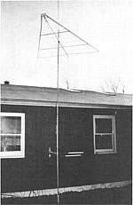
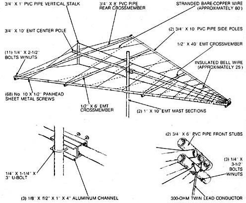
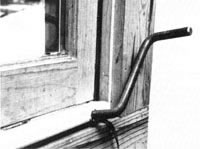

If your television reception is poor to nonexistent, try making a stand with "aerial" combat:
A few years ago, some friends of mine shed city life for the country, escaping to a small piece of land in the mountains. They were delighted with the clean air and the elbowroom, but being isolated took its toll . . . out of the blue, so to speak: Because their tract lay in a hollow, television and radio reception was almost nonexistent.
The fact that their house was surrounded by hilly terrain, as well as being located 70 to 120 miles from most of the local transmitters, dictated the need for a high-gain, fringe-area antenna capable of picking up signals over an extended range. However, the $100 price they were quoted for a commercial unit stopped them in their tracks. So they came to me (I'm an electrical engineer) and asked whether they could build an antenna that would serve the same purpose.
After doing some research and subsequent number-crunching, I discovered that not only could they duplicate the performance of the high-buck rig, but - using common hardware and some sections of bamboo that was growing nearby - they could probably do so for about $20! By this time, I was excited enough to jump right in and give them a hand, so I drew up a plan, and we built the antenna . . . twice. The first model, you see, was destroyed in a storm, so I took the opportunity to try out some new ideas on a second version - a conduit and plastic-pipe model. The one I'm about to describe incorporates the best features of both these prototypes.
Any antenna - TV, radio, or whatever - consists of three parts: the element array, the framework, and the mast. From a performance standpoint, the element array is the most important because it picks up the signals . . . but it's actually nothing more than a metal pattern of the right size and shape to suit a specific purpose. This design uses a Yagi-enhanced, log-periodic pattern . . . which, simply put, means that it has broadband capability and can thus cover the very high frequency (VHF, channels 2-13), ultrahigh frequency (UHF, channels 14-83), and frequency modulation (FM) broadcast bands.
Commercial elements are usually made of aluminum rod, sometimes anodized to resist corrosion. However, we got by with bare copper-stranded "radio" wire and some insulated bell wire left over from another project.
The framework is nearly as important as the element array because it supports that pattern and holds it in shape. Our bamboo cost us nothing and was both strong and lightweight; the parts for the PVC-pipe and conduit frame unit had to be purchased, but it was a bit easier to assemble than the "cane" version. Actually, anything light and rigid should work, but it would be better to choose a nonconductive material to avoid interfering with the pattern.
Finally, the mast holds the entire antenna assembly above the roof and parallel to the ground. We used a 10' length of 1" conduit (electrical metallic tubing, or EMT for short) to do the job, but any kind of thin-wall mechanical tubing would serve as well.
Often, depending upon one's geographical location, a fourth component - a rotor - can come in mighty handy for aiming the antenna directly toward different transmitting stations. The store-bought motor-driven models run $50 or $60, but we worked up a simple remote-controlled manual version for no more than the cost of some wire cable and a few pieces of hardware.
Sounds easy enough, doesn't it? Well, bear with me and I'll walk you through the construction procedure step by step.
To start, you'll want to rough out the framework. That'll require one 3/4"-diameter 10' length of EMT, a second 1/2"-diameter piece about 6' long, and a third 1/2" X 40" segment. You'll also need two 10' sections of 3/4" PVC pipe, an 8' length, a 1 ' piece, and two 6" hunks. (If you do have access to bamboo, feel free to use it . . . but be sure to dry and varnish about twice as many stalks as you think you'll need, because it's brittle and prone to split when being cut or drilled.)
The idea is to make a trellis affair like the one shown in our illustration. Using 1/4" machine bolts, start at the "point" (which I'll call the front of the frame) and "pinch" the ends of the three 10' sections between the two 6" plastic stubs, leaving about an inch between the tips (the conduit should be in the center). Then move to the opposite end of the poles and bolt them to the 8' PVC section, keeping the distance between the tips equal.
Next, measure 42" from the front of the frame and mark a mounting location for the 40" piece of EMT, then measure 43" back from this point and do likewise for the remaining 6' section. Trim the conduit pieces if necessary, and drill and mount them to the frame on the same side as the 8' crosspiece.
Finally, fasten the 12"vertical plastic stalk perpendicularly to the 8' rear section (half above and half below). Pick up the entire frame by its center pole to establish the balance point, mark that spot, and you'll be ready to string the element wires which form the pattern.
It might be easier to envision the element pattern if you imagine the skeleton of a fish, with backbone and ribs. Wire the backbone first, using the heavy bare copper conductor. Make the terminals at the front by fastening a No. 10 X 1/2" sheet metal screw through each 6" stub on the front, parallel to the 10' frame sections. With that done, install similar fasteners at each end of the vertical stalk, at the rear tip of the center pole, and on one arm of the rear crosspiece at a point halfway between the two poles.
Start at the front and run one continuous length of wire from one terminal to a screw on the vertical stalk, over and down to the head on the rear crosspiece, up to the other fastener on the stalk, and back to the remaining terminal at the front. Pull each section tight as you go, and then wrap the conductor once around each screw.
Next, you'll want to make a "reflector" - another length of the same wire stretched between the bolts at the rear corners of the frame and the screw at the tip of the center pole. (It's best to insulate this wire from the screwhead with tape or tubing to isolate it from the metal pole.)
The ribs of the fish - called resonant dipoles in technical terms - are paired short sections of wire which do most of the signal-gathering work. They spread out from the backbone spans at angles roughly parallel to that of the reflector.
To make them, get a measuring tape and a grease pencil, and starting at the front, mark off the following distances on the top and bottom backbone wires and on the outside of the two plastic side poles:
7-1/2" . . . 8-3/8" . . . 9-1/2" . . . 10-5/8" . . . 11-7/8" . . . 13-3/8" . . . 15" . . . 16-7/8" . . . 18-7/8" . . . 21-1/4" . . . 23-7/8" . . . 26-3/4" . . . 30" . . . 33-5/8" . . . 37-3/4" . . . 42-3/8" . . . 47-5/8" . . . 53-1/2" . . . 60" . . . 67-3/8" . . . 75-5/8" . . . 85" . . . 95-1/4" . . .106-7/8"".
You should now have four sets of 24 marks each, with the marks close together at the front of the frame and farther apart toward the rear. Drill 9/64" pilot holes at the indicated locations in both PVC pipes, and thread 48 No. 10 X 1/2" sheet metal screws partially in.
Now, set the frame flat with the front pointing away from you and the three long poles on top of the crosspieces. Starting at the rearmost mark on the upper backbone wire, twist and solder the end of your heaviest wire to it, then run it to the rear screw on the right pole section and pull it just enough to take up the slack. Tighten the screw and clip off the rest of the wire.
With that done, run another piece of heavy wire from the next mark on the backbone to the second screw on the left frame pole, and secure it at both ends as before. Do this four more times, alternating left and right, and skipping every other screw on each side.
At this point, you can use lighter wire if you have it. just continue the procedure I've described until you reach the last mark on the upper backbone wire. Then turn the whole frame over and do the same thing with the lower backbone strand, attaching wires to all the screws you left vacant when doing the top one. (Remember to use your heavier wire for the rearmost five or six dipole ribs.)
While the frame is still upside down, measure and mark the bottom of each side pole at the following distances from the front of the frame: 3-3/4", 4-1/4", 4-3/4", 5-3/8", 6", and 6-3/4". Drill pilot holes at these marks, and insert twelve more sheet metal screws. String your heavy wire (if you have any left) between opposite pairs of screws to create "directors" which will improve reception at the higher-numbered UHF channels.
Finally, install the twin lead terminals by fastening two more sheet metal screws into the lower 6" pipe at the front, centered and spaced about 1" apart. Cut two 4" lengths of wire and connect each of these between a backbone and a terminal screw, twisting and soldering the wire splices to assure a good connection. Once the antenna is permanently mounted, you can hook up the 300-ohm twin lead wire that will carry the signal into your home.
The antenna mast mounts to the frame's center pole with a 1-1/4" X 3" U-bolt and some short sections of 1/2" X 1" iron or aluminum channel. Cut the channel to about 4" in length . . . then, using the U-bolt as a template, bore matching 1/4" holes through the center of each bar. Two of the channel pieces fit around the center pole at the previously marked balance point; the third presses against the mast perpendicularly, with its flat back against one of the other sections of channel. Position the frame about a foot below one end of a 1" X 10' length of thin-wall conduit and lock it in place with the U-bolt clamp. Check to be sure none of the copper element wires are touching the mast or the U-bolt.
Before mounting the antenna, take the time to think about lightning protection. If you already have a tall lightning rod fastened to your roof or chimney, plan on mounting the antenna several feet below that. If not, you might want to add a mast extension that will - in most cases - provide a "cone of protection" for the antenna frame. For this 10'-wide frame, 5' of extension will do . . . and you can accomplish the task easily by slipping a 1/2" X 5' piece of EMT about 9" or so into the top of the mast tube, cross-bolting it in place with a 1/4" X 1-1/2" cap screw and nut, and sealing the joint and the exposed end with silicone or cored furniture tips. (I'll cover the actual grounding of the mast shortly.)
As I mentioned earlier, some kind of rotor device can really improve the strength of a signal, so I'm going to describe how you can build a mast mount, rotor, and ground stake-all in one. (If you don't need "aiming" capability, simply fasten the mast to your chimney or house with locally available mounting hardware . . . but be sure to ground it by running a length of 6-gauge wire or the equivalent directly between a clamp on the bottom of the conduit and a metal stake or pipe driven 4' into the ground alongside the foundation.)
To begin, study your roof overhangs near the window you plan to feed the twin lead through. If they're of a conventional length (about 16") you're in luck . . . but don't count on putting the antenna anywhere near service lines or tall pine trees. The former can pose a real shock hazard, and the latter can actually interfere with reception! (Try, too, to set the frame above the roof's ridgepole; if you don't, the antenna's effectiveness may be reduced.)
You'll probably have to add another full length of 1" EMT to the bottom of the mast to accomplish your goal. If so, join the two sections with a center core of 3/4" Schedule 40 pipe at least half a foot long and threaded at both ends. Make sure it extends an equal distance into both tubes, then cross-drill each half and install 1/4" X 1-1/2" lock bolts to hold the joint together.
Now, stand the mast up and, with the help of a friend, hold it upright and about an inch from the edge of the roof, gutter, or what have you. Mark the spot on the ground where the mast stands, then carefully lay the mast aside and remove a core of earth at least two feet deep at that spot, using a post-hole digger. Cap a 4' length of 1-1/4" iron pipe and hammer it firmly - cap first - into the center of this hole. Tamp the earth in place around the pipe, then slip the conduit mast into the iron opening.
Straighten the mast once more, and mark spots for two supports . . . one at or near the roof soffit, and one at waist level. You can use two 18" or 20" lengths of 1 X 4 with 1-1/4" holes bored through their ends to hold the mast, and 6" shelf brackets and lag screws to fasten the supports, depending on your situation. Don't actually mount the supports until they're around the conduit . . . and you might want to strengthen the edge of the boards by trimming them with a nailed-on strip of sheet metal surround. (A cut-out tennis ball can be used to seal the bottom pivot mount opening if you wish.)
Your antenna will now pivot, but you'll need an indoor control to make it do so. Simply bend a piece of 1/2" X 20" steel rod into a crank shape and slip the shaft into a 9/16" hole bored through the thickness of a 1 X 6 cut to fit the width of your windowsill (a cotter-pin lock on each side of the wood will prevent the crank from "walking").
Close the window on the crank board, then drive some thread-cutting screws into the exposed metal shaft about 6" apart. Do the same thing on the antenna mast (at a point level with the crank) and mount a pair of 1/8" X 1" pulley blocks on the house siding in line with the conduit.
Finally, fasten some 3/32" wire cable to one of the screws on the mast and feed it around the pole about five times. Do the same at the other screw, but wrap it in the opposite direction . . . without unreeling the first group of coils. Repeat this procedure on the crankshaft, making sure the cables are threaded through the pulley blocks and are fairly taut.
This windlass setup should be a big help in fine-tuning reception; however, it could also provide an alternate path for electricity if a direct lightning strike should choose to follow the control cable rather than seek the more immediate ground connection. A 1/2" X 16" plastic-pipe "insulator" section spliced into each cable should interrupt that conduction route.
By this time, a strong blend of TV and FM signals should be clamoring to flow into your living room. All that's left to do, then, is to connect an appropriate length of 300-ohm twin lead to the terminals at the front of the antenna, guide that wire down to window level by using some antenna-wire standoffs (be certain to leave enough slack at that point to allow for one complete rotation of the pole) and pass the lead beneath the window sash.
Once it's inside, you can use a $4.00 signal splitter to run a second TV set or an FM receiver . . . but remember that the more equipment you add, the weaker the signal will be that each receives. And one more thing: Despite the precautions you took in grounding your mast, an electrical charge - from static buildup or in the form of peripheral energy from a lightning strike - could still find its way into your TV set. You can safeguard against this fairly effectively by installing an inexpensive static discharge unit (sometimes called a lightning arrester by optimists) on the lead-in line. This part should be connected to your ground pipe with a separate wire.
That about wraps it up. Believe me, it's harder to explain than to actually accomplish, so don't be afraid to jump right in. If you have to buy every component new, I'm sure you'll end up spending more than the $20 that we did . . . but some no-nonsense scrounging will probably put you right in the ball park, even if you purchase the plastic pipe and conduit. The important thing is that you'll be catching the signals thrown your way . . . and you'll be doing it with some very basic aerial anatomy.
|
 |
 |
 |